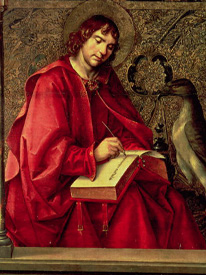
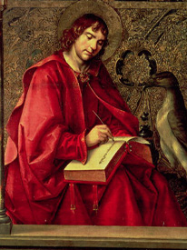

SUNDAY SERVICES
10:15 a.m. Choral Eucharist
PARISH OFFICE HOURS
Monday-Thursday 1 - 4 p.m.
DONATE TO ST. JOHN'S
GET INVOLVED
WELCOME TO ST. JOHN'S!
St. John's is a place where people's lives are transformed by encountering
the love of God in community. Christian faith isn't an idea; it's an experience.
We invite you to explore that experience with us through worship, fellowship and service.
ABOUT ST JOHN'S
Located around the corner from the busy Mission-16th Street-Valencia corridors in San Francisco's north Mission District, St. John's has been described by many as an oasis not only for the tranquility of our garden amidst the surrounding bustling streets, or the warm golden light that fills our soaring nave on a sunny day, but because so many have found St. John's to be a place of loving peace, healing, and renewal in an often all-too-broken world.
OUR MISSION
Our mission is to live, love, and serve in the hope and joy of the risen Christ.
Our vision: We seek to be a Christian community in which people of all sexual orientations, gender identities, cultures, and colors are welcomed and their gifts are celebrated.
Our Core Values: We are a Eucharistic worshipping community in the Anglican tradition. Our celebration of the Holy Eucharist, marked by beautiful music, is the heart of our common life.
We are a Christ-centered community. For people of all ages, we value faith formation that engages the mind as well as the heart, and provides the foundation for vibrant lay ministry.
We have a special vocation to respect and advocate for the dignity of gay, lesbian, bisexual, and transgender people. This by no means defines the full extent of our baptismal promise to respect the dignity of every human being, but it is a crucial element of that promise in our ministry context.
We value diversity and welcome anyone who wishes to explore Christian faith and practice.
OUR MISSION
We value connection, and strive to promote a sense of belonging among the members of the parish that readily includes newcomers. This is often talked about in terms of communication or pastoral care or hospitality, but it is fundamentally about feeling connected to God and to one another.
We value the North Mission neighborhood. Our location in this particular place spiritually anchors us and gives substance to our mission and ministry. This neighborhood keeps us grounded in reality.
ST JOHN'S HISTORY
The third parish established in the new Episcopal Diocese of California, St. John's began in 1857 as a pioneer outpost in rented space at the edge of swamps and sand dunes. It quickly grew into a thriving 'society parish' of sorts, helping to found schools, hospitals, and chapels in the rapidly growing Mission District.
By 1861, St. John's was able to hire its first rector, the Rev. Thomas Brotherton, and in 1862, a new church building, which could accommodate 250, opened, with fundraising spearheaded by the newly created Ladies Parish Aid Society. The first St. John's was a redwood church in Pointed Gothic style at the northeast corner of Valencia and 15th Streets. Within just 30 years of its founding, St. John's had become a large and prosperous parish.
ST JOHN'S HISTORY
During this early golden age, St. John's played a key role, led by Rev. Brotherton, in founding St. Luke's Hospital (1871) and provided financial and spiritual support to many institutions within the parish bounds, including the City and County Hospital, the Poor House, and the Protestant Episcopal Old Ladies Home.
Another early rector, the Rev. Dr. E.B. Spalding, brought the Trinity School, a distinguished boys' school, to St. John's parish in 1881 and ran it for 20 years. In 1882, the Irving Institute, a fashionable girls' school, was established under St. John's auspices at Valencia and Hill Streets.
As the city boomed and the Mission became a highly desirable residential neighborhood, St. John's continued to expand. It had become something of a society parish, home to leading businessmen, judges, and James "Sunny Jim" Rolph, eventual mayor of San Francisco and governor of California. Dr. Spalding inaugurated a building campaign to construct a cathedral-sized church. It was completed in 1891 at a cost of $57,000
But then the Great San Francisco Earthquake of 1906 struck, and the second St. John's building was destroyed in its aftermath.
ST JOHN'S HISTORY
The edifice had been dynamited to serve as a firebreak to stem the post-quake fires raging from the north and northeast, which tore a wide swath through the Mission, stopping eventually at 20th and Dolores Streets.
There was enough money (from insurance and donations from Episcopal churches across the country) to rebuild another church on the same spot. The new and current St. John's, consecrated in 1910, was designed by Herbert Maggs and Ernest Coxhead, who modeled it on the parish church of St. Stephen's, Norwich, England, in the light, soaring style known as Perpendicular Gothic or Tudor Lantern.
Keeping the red doors on Julian Street open during the Depression and war years was no mean feat. Events continued to change the neighborhood, but the church was never closed. In 1974 an arsonist destroyed the parish hall and rectory, but the charred remains were turned into a garden. The then rector, the Rev. James Brown, continued to reach out to the gay community, and built a reputation of St. John's as a place of refuge and prayer for LGBT people and their friends and families.
CLERGY & STAFF
CLERGY
The Reverend Richard L. Smith, Ph.D., Vicar
rlsmith21050@gmail.com
The Reverend Deacon Jackie Cherry
jaccherry@yahoo.com
The Reverend Dr. Jack Eastwood, Rector Emeritus
jhbernal@gmail.com
The Reverend Robert Cromey, Priest Associate
twocromeys@earthlink.net
STAFF
The Reverend David Stickley,
Parish Administrator
parishadmin@stjohnsf.org
LAY LEADERSHIP
BISHOP'S COMMITTEE
Timm Dobbins, Senior Warden
Robert Craig, Junior Warden
CLERKS
DEANARY DELEGATES
Bill Sullivan (Alternate)
MISSION
HISTORY
CLERGY & STAFF
LAY LEADERSHIP


 
